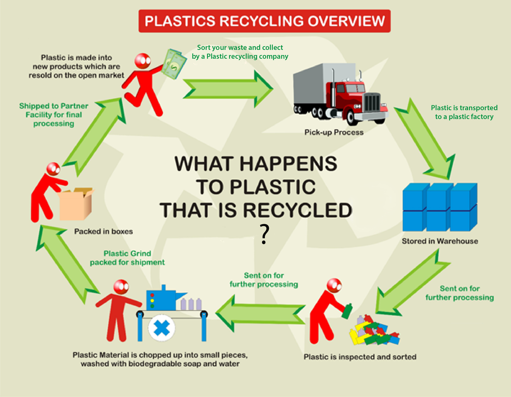
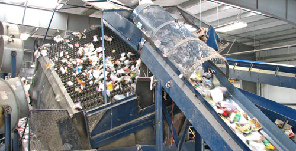
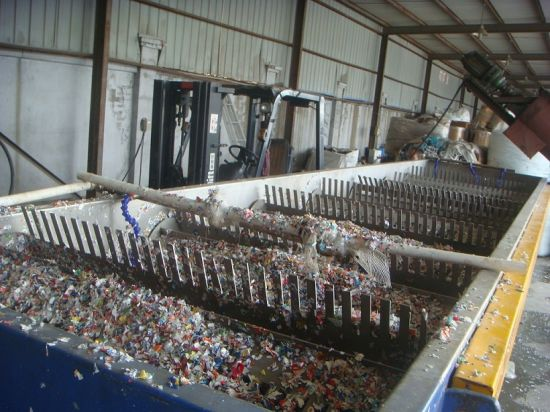
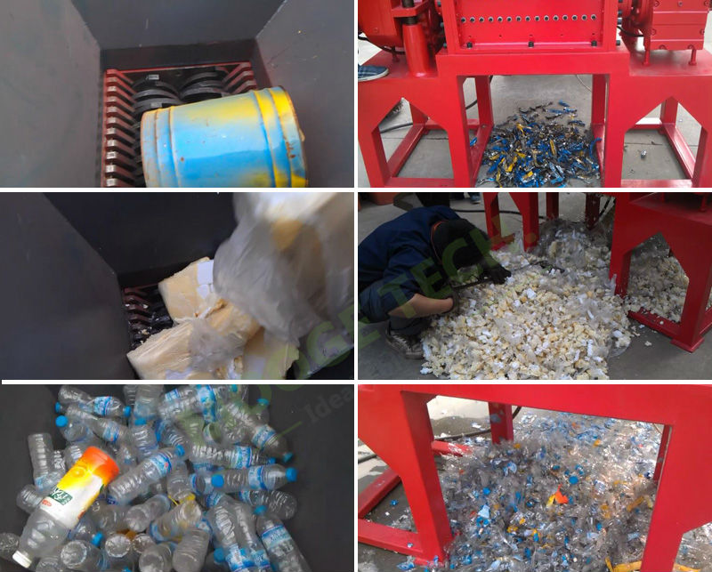
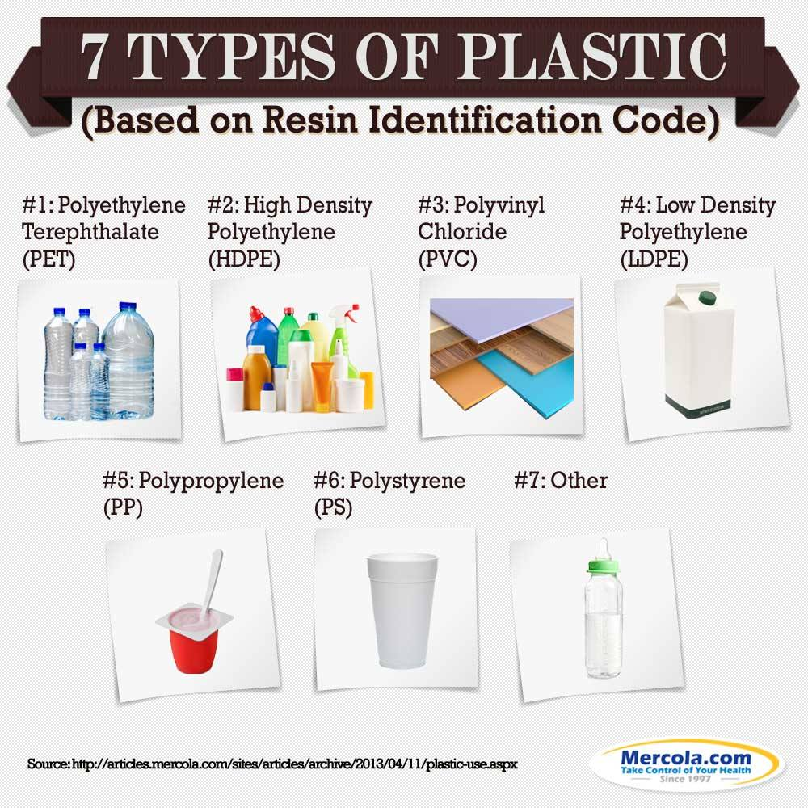
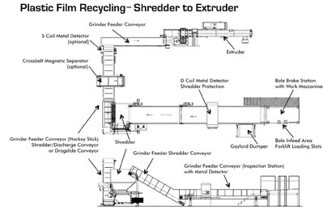

|
RECYCLEAIDTOGETHER WE CAN MAKE A DIFFERENCE |
|
RECYCLEAIDTOGETHER WE CAN MAKE A DIFFERENCE |
|
Plastic recycling is the process of recovering different types of plastic material in order to reprocess them into varied other products, unlike their original form. An item made out of plastic is recycled into a different product, which usually cannot be recycled again. |
 |
|
Sorting: It is necessary that every plastic item is separated according to its make and type so that it can be processed accordingly in the shredding machine. |
 |
|
Washing: Once the sorting has been done, the plastic waste needs to be washed properly to remove impurities such as labels and adhesives. This enhances the quality of the finished product. |
 |
|
Shredding: After washing, the plastic waste is loaded into different conveyer belts that run the waste through the different shredders. These shredders tear up the plastic into small pellets, preparing them for recycling into other products. |
 |
|
Identification and Classification of Plastic: After shredding, a proper testing of the plastic pellets is conducted in order to ascertain their quality and class. |
 |
|
Extruding: This involves melting the shredded plastic so that it can be extruded into pellets, which are then used for making different types of plastic products. |
 |
Among the many processes of recycling plastic waste, the following two are the most popular in the industry.
Heat Compression:
This type of plastic recycling is gaining special demand in the United States, Australia, and Japan because of its ability to recycle all types of plastic at once. It takes unsorted and cleaned plastic waste and mixes it in huge tumblers that churn the entire mixture. The major advantage of this process is that it does not require matching forms of plastic to be recycled together.
Monomer:
Through the elaborate and accurate monomer recycling process, major challenges of plastic recycling can be overcome. This process actually reverses the polymerization reaction in order to recycle the same type of condensed polymer. This process not only purifies but also cleans the plastic waste to create a new polymer.
After knowing the processes and stages of plastic recycling, it is also important to know its various benefits. A few of them are:
There’s A Ton of Plastic:
One of the biggest reasons for recycling plastic is its huge quantity. It has been observed that 90% of the waste accumulated by the municipal corporation is a plastic waste. Apart from this, plastic is used for manufacturing various types of goods and items that are being used on a daily basis. This will not only help increase the production of plastic but will also take care of the environment.
Conservation of Energy and Natural Resources:
The recycling of plastic helps save a lot of energy and natural resources as these are the main ingredients required for making virgin plastic. Saving petroleum, water, and other natural resources help conserve the balance in nature.
Clears Landfill Space:
Plastic waste is accumulated on land that should be used for other purposes. The only way this plastic waste can be removed from these areas is by recycling it. Also, various experiments have proven that when another waste material is thrown on the same ground as plastic waste, it decomposes faster and emits hazardous toxic fumes after a certain period. These fumes are extremely harmful to the surrounding area as they can cause different types of lung and skin diseases.
Plastic recycling not only promotes proper utilization of plastic waste but also helps conserve the environment, making it cleaner and greener.